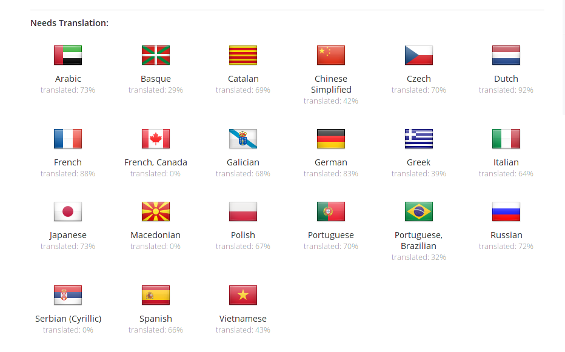

These release notes are a merge of the previous Fast Track release notes available here.
For Developers
Content Automation
You can fetch dirty properties of a modified document to send only modified properties with automation client
JSON Marshalling enhancement. You can send POJO in input or parameters.
We made a lot of progress on the Content Automation API.
It's possible to contribute a chain into another chain -> Composite Automation Chain.
It's possible to add parameters to a chain.
Chains contributed are displayed into the Automation documentation with operations listing, parameters and input/output.
An Automation Client Test Suite in Java (or Java Test Compatibility Kit -> TCK) is provided for helping people understanding how Automation is working remotely. You can read our documentation for the details.
Managing business objects (Plain Old Java Object client side for mapping Nuxeo Document Model Adapter server side) is now available.
The goal is to manipulate business object and avoid direct DocumentModel manipulation on client side:
Trace
You can now enable tracing of Content Automation call. Operation chains and operations calls information are collected and logged during their execution by the Automation Trace feature.
Error management
Automation exception chain can be added to be executed when an error occurs during an Automation execution. After contributing your custom chains, you can declare your exception chains:
New Description Parameter for Operation
When you write a new operation, you can add a description to your declared parameters. This comes in handy for the API documentation and Nuxeo Studio.
Document Oriented REST API
We have a new document oriented API for CRUD operation.
Create
Read
Update
Delete
Domain model object and Automation
You can use Business objects with Automation. They are also binded on the REST API and you just have to use the same semantics than for document resources.
Updating a business object
New Endpoints
Here's the list of endpoints available at the moment:
- Documents (/nuxeo/api/v1/id/{docId}): to do CRUD on documents (including paginated search)
- Users (/nuxeo/api/v1/user/{userId}): to do CRUD on users
- Groups (/nuxeo/api/v1/group/{groupId}): to do CRUD on groups
- Directories (/nuxeo/api/v1/directory/{directoryId}): to do CRUD on directories
- Automation (/nuxeo/api/v1/automation/{Operation id}): to call a "command", i.e. an operation or operation chain deployed on the server
New Adapters
You can also use several adapters for ACLs, blob, business objects, document children, operation, page provider, search etc... An adapter is a URL segment that starts with "@" and that transforms the input resource so as to return another resource. For example, using @blob will return the file of a document (the one store on the property given by the next URL segment), and chaining it to @op will call an operation (that takes in input a blob):
Pluggable Context
Because it is sometimes useful to optimize the number of requests you send to the server, we provide a mechanism to request more information on the answer, simply by specifying the context you want in the request header. You can activate contributor simply by adding the right header on the request. Those contributors can also be activated using action filter.
The document oriented REST API has been moved into a separate package to ease maintenance and upgrades.
We released an AngularJS sample application to showcase the API.
We've added pagination support for user and group endpoints.
We've added support for different version of the API:
Using the version segment is mandatory. The version is used mostly for giving guarantees to the API user that the JSON entities won't change when migrating to newer version of Nuxeo.
CMIS
We've upgraded OpenCMIS to 0.9.0 . This gives us the new CMIS 1.1 browser bindings but we haven't finished implementing all the new features yet.
New operations
Add Message - Seam.AddMessage
Add a feedback message to be displayed. The message will be internationalized. You can specify the severity of the message using INFO, WARN and ERROR, INFO being the default. Message parameters are extracted from the context using the 'AddMessage.messageParams'.
Add entry into multi-valued metadata - AddEntryToMultivaluedProperty
Add value to the field expressed by the xpath parameter. This field must be a multivalued metadata.
Convert to given mime-type - Blob.Convert
Convert the input file to a file of the given mime-type and return the new file.
Create Asset(s) from file(s) - Dam.Import
Create Asset(s) from Blob(s) using the FileManagerService.
Create Proxy Live - CreateProxyLive
This operation will create a proxy that points the given document as input. This is like a symbolic link for File System. The proxy will be created into the destination specified as parameter.
Creates directory entries - Directory.CreateEntries
Creates directory entries. Entries are sent as a JSON array. Returns the created entry ids as a JSON array.
Deletes directory entries - Directory.DeleteEntries
Deletes directory entries. Entry ids to be delete are sent through a JSON array. Returns the deleted entry ids as a JSON array.
Get Live Document - GetLiveDocument
Get the live document even if this is a Proxy or Version Document.
Get Nuxeo Principal - NuxeoPrincipal.Get
Retrieve Nuxeo principal and export it as a DocumentModel. If login parameter is not set, the operation will return information about the current user, otherwise Directory Administration rights are required.
QueryAndFetch - Resultset.PageProvider
Perform a query or a named provider query on the repository. The result is paginated. The result is returned as a RecordSet (QueryAndFetch) rather than as a List of Document. The query result will become the input for the next operation. If no query or provider name is given, a query returning all the documents that the user has access to will be executed.
Raise Seam events - Seam.RaiseEvents
Raise Seam events without parameters. This is a void operation - the input object is returned back as the output
Reads directory entries - Directory.ReadEntries
Reads directory entries. Entry ids to be read are sent as a JSON array. Returns the entries as a JSON array of JSON objects containing all fields.
Remove Entry Of Multivalued Property - RemoveEntryOfMultivaluedProperty
Removes the first entry of the giving value in the multivalued xpath, does nothing if does not exist. If 'is Remove All' is checked, all entry instances in the list will be removed. if not then just the first one found will be removed.
UI Selected documents form list - Seam.GetDocumentsFromSelectionList
Fetch the documents selected in the selection list passed as a parameter. If the list name is empty, the current folder selection list is used.
Updates directory entries - Directory.UpdateEntries
Updates directory entries. Entries to be updated are sent as a JSON array. Returns the updated entry ids as a JSON array of JSON objects containing all fields.
Get a Directory Projection - Directory.Projection
Executes a query using given filter and return only the column *columnName*. The result is assigned to the context variable *variableName*. The filters are specified as key=value pairs separated by a new line. The key used for a filter is the column name of the directory. To specify multi-line values you can use a \\ character followed by a new line.
Example:
By default, the search filters use exact match. You can do a fulltext search on some specific columns using the fulltextFields. it's specified as comma separated columnName, for instance:
Example:
Traces.Get - Traces.Get
Retrieve trace associated to a Chain or an Operation.
Traces.ToggleRecording - Traces.ToggleRecording
Toggle Automation call tracing (you can set the 'enableTrace' parameter if you want to explicitly set the traceEnable value.
Remove Permission - Document.RemovePermission
Remove permissions for a given user on the input document(s). Returns the document(s).
Add Permission - Document.AddPermission
Add Permission on the input document(s). Returns the document(s).
Concatenate PDFs - Blob.ConcatenatePDFs
Given a File document holding a PDF on the file:content property and 2 PDFs on the files:files property, the following operation will provide a PDF that is the result of the merge of all the PDFs, with the content of the one in file:content property first.
Run For Each in new TX - Context.RunOperationOnListInNewTx
Run an operation in a new Transaction for each element from the list defined by the 'list' paramter. The 'list' parameter is pointing to context variable that represent the list which will be iterated. The 'item' parameter represent the name of the context varible which will point to the current element in the list at each iteration. You can use the 'isolate' parameter to specify whether or not the evalution context is the same as the parent context or a copy of it. If the isolate is 'true' then a copy of the current contetx is used and so that modifications in this context will not affect the parent context. Any input is accepted. The input is returned back as output when operation terminate.
CSS 3 Support in Theme Engine
The flute CSS parser has now been replaced by phloc-css, allowing CSS3 to be used in the Theme engine.
UI Style Guide
The Nuxeo UI Style Guide is an online help to design your content, explore all the available CSS classes for the different elements, and to check the list of icons embedded in the platform.
UI Framework
Widget Label properties now accept an EL expression. This allows you to have dynamic labels.
Every richfaces ajax call use a global default ajax event queue. You can of course still specify your own queue. This results in more stable pages.
HTML5 PlaceHolder
You can use the HTML5 placeHolder attribute on inputtext and textarea. It's available as a widget property. You can put text(that will be translated) or an EL.

New drop zone Widget
This widget allows you to execute an operation with the files you've dropped as input.
Widget Actions
One can use automatic JS confirmation popup. If you add a confirmMessage property in the actions, it generates the appropriate js method. It accepts any EL as parameter. Here's an example:
<action id="JenkinsReportSendMail">
<properties>
<property name="confirmMessage">label.jenkins.sendMail.confirm</property>
<propertyList name="confirmMessageArgs">
<value>#{docSuggestionActions.getDocumentWithId(currentSuperSpace.id)
.getPropertyValue('jenkinsreports:report_email')}</value>
</propertyList>
</properties>
</action>
messages:
label.jenkins.sendMail.confirm=This will send an email to {0},
are you sure that you would like to continue?
You can now include widgets that render actions. This is particularly useful in Nuxeo Studio. This allows us to easily blend different action types like a submit button, an outgoing link and an action that opens a fancybox. You can also merge all of them in any order you want.
We have a better support of form inside fancybox opened by actions. You can submit the associated form without submitting every other form on the page. No need to do nested form anymore.
You can mix any type of action. If one action does not support ajax (like a download), it can be in the same tool bar as an ajax action.
You can associate selected documents of a content view to actions outside the content view. That's how we made bulk edit.
We allow resetting of JSF components state when using ajax. JSF action listener #{jsfResetActions.resetComponents} can be used in actions that need to reset all components in the same JSF naming container.
Action Context
Until now, action filters were using JEXL for resolution instead of the engine used by JSF, and Seam components could be resolved in this context, but using a hack, hence only actions *starting with the seam component name* could be resolved correctly, for instance #{clipboardActions.canCopy}. Others were not resolved correctly, for instance #{!clipboardActions.canCopy}, #{empty clipboardActions.selectedDocuments}, #{clipboardActions.canCopy and clipboardActions.canPaste}, etc...
Now the action context has been changed into an interface, and is responsible for evaluating expressions held by filters (instead of the filter itself) => by implementing this interface, any kind of expression with any kind of variables in context can be resolved using the filters/actions service API. Seam JSF EL are resolved in a native Seam/JSF context.
Action Widget Types
We've made a pluggable action types library. It means that now you can define your own action type and associated rendering. You can use it within new action widget types (like ToolBar actions, Form actions, Tabs actions etc...).
Runtime Service Seam Injection
You can now inject Nuxeo runtime services directly in a Seam bean. Where you use to call Framework.getLocalService(SchemaManager.class) in a method, you can simply inject the service.
Richfaces Update
Nuxeo uses a custom version of Richfaces based on 3.3.1 GA, This custom version of Richfaces is now available on GitHub with all Nuxeo's patches.
New Header
Nuxeos's header has been rewritten using widgets displaying actions. Basically it means you can override each part of the header easily. Like the links, search box etc...
Ajax Tabs
You can Ajaxify any tab you want using the property nuxeo.jsf.useAjaxTabs. It means that when you click on a tab, only its content will be reloaded instead of the whole page. And the URL is updated automatically so you can have permlink with the selected tab, use the back button to go to a previously selected tab. This option can also be chosen when creating a new tab in Nuxeo Studio.
Debugging JavaScript
When you are in dev mode, the JavaScript files are not minified. This is much better when you need to debug JavaScript.
Content Views
On Nuxeo side, filter can be shown unfolded by default, and some content view templates have been redefined to ease the customization.
On Studio side, the "filter unfolded" option is presented for 5.7.2, and events as well as the page provider class and properties can now be configured also.
CORS support
If you do cross-domain requests from any JavaScript client to access WebEngine resources or Automation APIs, there's a chance that your browser forbids it. CORS allows you to communicate with Nuxeo from another domain using XMLHttpRequests.
We've added a new extension point based on Vladimir Dzhuvinov's universal CORS filter, which allows you to configure on which URL cross-origin headers are needed.
Scan Importer
The scan importer has been improved. You can choose if you want to create the import document container each time you launch an import. You can also choose to update an existing document instead of creating a new one.
Login Page
The login page can now be configured via an extension point, making it easier to upgrade when the login page is customized, and benefit from new features, like OpenID authentication provided by Nelson Silva.
Here is a sample configuration for the login page:
Long Running Listener
You can now extend a new abstract class called AbstractLongRunningListener. Its purpose is to help building an Asynchronous listeners that will handle a long running process.
By default, PostCommitEventListener is executed in a Worker that will take care of starting/comitting the transaction.
If the listener requires a long processing, this will create long transactions which should be avoided. To avoid this behavior, this base class split the processing in 3 steps:
- Pre processing: transactional first step
- Long running: long running processing that should not require transactional resources
- Post processing: transactional final step
To manage sharing between the 3 steps, a simple Map is provided.
Move To Tomcat 7
Tomcat has been upgraded to version 7.0.42. The main improvement is the upgrade to the Servlet 3.0 API. Take a look at the details.
Nuxeo Visible Content Store (VCS)
Enhancements
Single datasource mode, removes the extra cost of XA transactions when all datasources points to the same database (which is the most common setup). It simplifies configuration and enhances performance.
Soft delete, more efficient deletion using delayed batching.
Optimized id generation, using database-native sequences (PostgreSQL, SQL Server) or UUIDs (PostgreSQL). This improves performance and database size.
Flag to disable proxies, if you don't use proxies, then this removes the extra work at the SQL level and improves performance.
Allow attaching schemas to proxies
Database Support
Microsoft SQL Server 2012 support, including Azure.
PostgreSQL 9.2 support for cluster mode (non-clustered mode already worked in Nuxeo 5.6).
IBM DB2 9.5 preliminary support (non-optimized, therefore only for small databases).
Misc
Various performance enhancements for PostgreSQL, Oracle and SQL Server
Added "NotFulltextIndexable" facet to avoid indexing documents with this facet.
Allow clustering for Oracle on Amazon RDS.
Optimize complex list property update (use UPDATE instead of DELETE + INSERT).
Support Microsoft's JDBC driver for SQL Server.
Redis
Several components in Nuxeo will make use of Redis as an optional feature. To configure Redis, the following extension point can be used:
Redis Service
To use the Redis service, do:
This service currently provides two methods:
Standard usage pattern is:
Redis WorkManager
We added a Redis based WorkManager. This is helpful for:
- High-Activity work queueing, to avoid saturating memory or blocking,
- Queue persistence, to avoid lost jobs on shutdown,
- New feature: node-aware job execution.
PDF Signing
Now you can apply more than one signature to a PDF and configure the position of the signatures following a predefined matrix. Here's a sample contribution:
Mockito Integration
We've added Mockito support to our test framework. Here's an example:
Localization
Crowdin
Nuxeo has an account on Crowdin. It makes it easier for everyone to help translate Nuxeo in different languages. You can read this blog for more information.

Dutch Translation
Our partner Capgemini Netherlands has contributed the Dutch translation for Nuxeo.
Miscellaneous
Simple Computed Group
The idea is to simplify computed groups management by a simple contribution. Here are two examples. The first one will create a virtual group grade_companyValue where companyValue is the company value for the user. The second one will create a creator_documentId for each document where the user is the creator.
ScanImporter Enhancement
We're still improving the scan importer. One of the latest enhancement is the support of MVEL in the XML mapping code. This will allow you to setup some business logic during import without writing cutom Java code. Here's an example:
With the following xml fragment:Will be equivalent to the following code snippet:
NXQL
See the NXQL Documentation for the current state of NXQL.
ecm:isCheckedIn: 1 if the document is checked in and 0 if not (the opposite of DocumentModel.isCheckedOut()). This can only be compared to 1 or 0.
ecm:isVersion or ecm:isCheckedInVersion: 1 for versions and 0 for non-version (DocumentModel.isVersion()). This can only be compared to 1 or 0. (The name ecm:isVersion is available since Nuxeo 5.7.3)
ecm:versionVersionableId: the id of the versionable document of a version (the versionable document is the one from which the version was created).
ecm:isLatestVersion: 1 if this is the latest version of a document, 0 if not. This can only be compared to 1 or 0.
ecm:isLatestMajorVersion: 1 if this is the latest major version of a document, 0 if not. This can only be compared to 1 or 0.
ecm:tag: allows NXQL queries on a document's tags.
ecm:proxyTargetId: allows NXQL queries on the id of the target of a proxy.
ecm:proxyVersionableId: allows NXQL queries on the id of the versionable document of a proxy (the versionable document is the one from which the version to which the proxy is pointing was created).